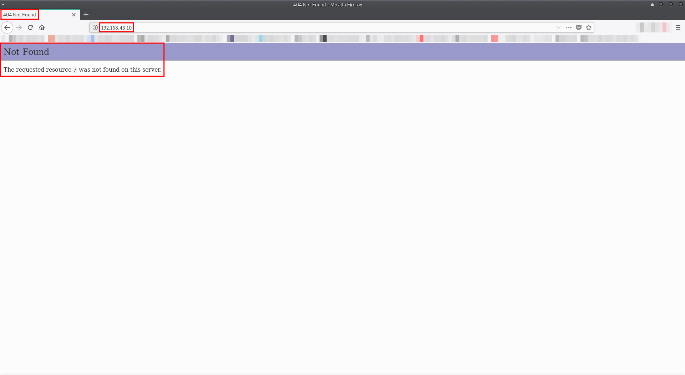
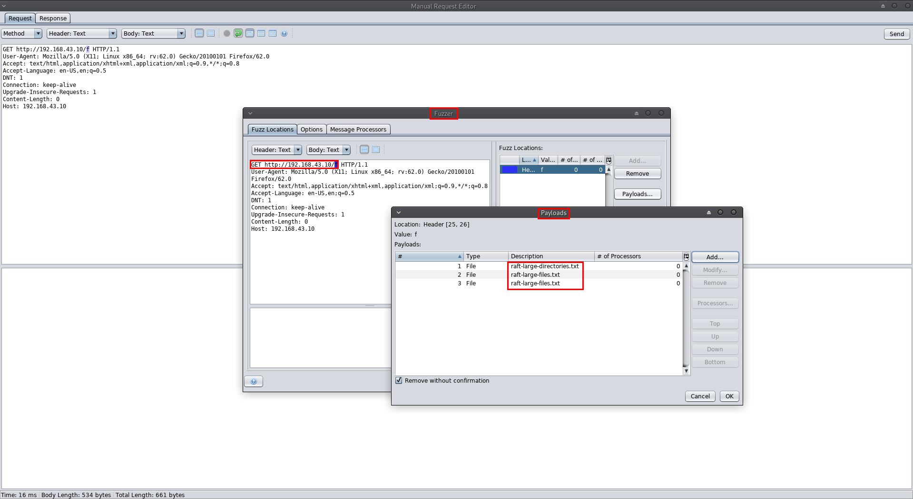
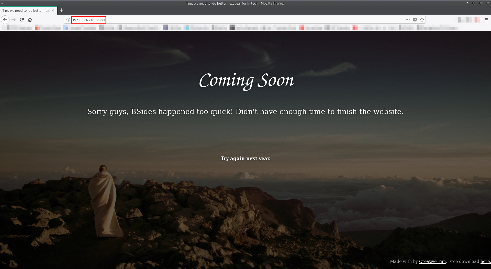
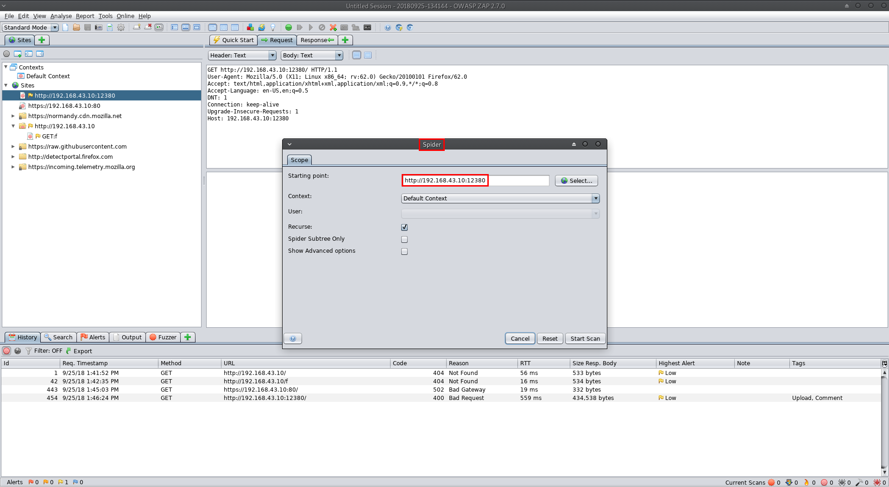
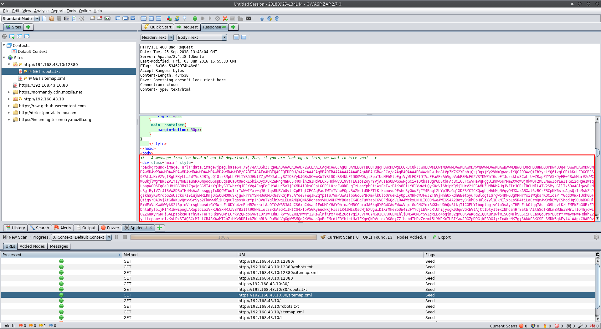

Stapler: 1
Information Gathering:
First, I fired up HaGashash in order to gain some information about which host to attack and what interesting ports are there. (https://github.com/Gandosha/HaGashash).
[GandoPC ~]# go run go/src/github.com/Gandosha/HaGashash/main.go -project=Stapler -subnet=true -interface=enp0s3
<-=|HaGashash by Gandosha|=->
[+] nmap executable is in '/usr/bin/nmap'
[+] ifconfig executable is in '/usr/bin/ifconfig'
[!] Dependencies check is completed successfully.
[!] Starting to scan your subnet.
[+] Alive hosts in 192.168.43.0/24 are:
192.168.43.1
192.168.43.2
192.168.43.10
192.168.43.3
[+] Directory created at: /HaGashash_Projects/Stapler/192.168.43.1.
[!] Starting to scan 192.168.43.1 for TCP interesting stuff.
[!] Starting to scan 192.168.43.1 for UDP interesting stuff.
[+] Directory created at: /HaGashash_Projects/Stapler/192.168.43.2.
[!] Starting to scan 192.168.43.2 for TCP interesting stuff.
[!] Starting to scan 192.168.43.2 for UDP interesting stuff.
[+] Directory created at: /HaGashash_Projects/Stapler/192.168.43.10.
[!] Starting to scan 192.168.43.10 for TCP interesting stuff.
[!] Starting to scan 192.168.43.10 for UDP interesting stuff.
[+] Directory created at: /HaGashash_Projects/Stapler/192.168.43.3.
[!] Starting to scan 192.168.43.3 for UDP interesting stuff.
[!] Starting to scan 192.168.43.3 for TCP interesting stuff.
[+] Nmap's TCP script scanning on 192.168.43.3 is completed successfully.
[+] Nmap's UDP script scanning on 192.168.43.3 is completed successfully.
[+] Nmap's TCP script scanning on 192.168.43.10 is completed successfully.
[+] Nmap's TCP script scanning on 192.168.43.1 is completed successfully.
[+] Nmap's TCP script scanning on 192.168.43.2 is completed successfully.
[+] Nmap's UDP script scanning on 192.168.43.10 is completed successfully.
[+] Nmap's UDP script scanning on 192.168.43.1 is completed successfully.
[+] Nmap's UDP script scanning on 192.168.43.2 is completed successfully.
[+] Summary file for 192.168.43.10 is ready.
[+] Summary file for 192.168.43.1 is ready.
[+] Summary file for 192.168.43.3 is ready.
[+] Summary file for 192.168.43.2 is ready.
[gandosha@GandoPC ~]$ cat /HaGashash_Projects/Stapler/192.168.43.10/nmap_TCP_scan_output
# Nmap 7.70 scan initiated Tue Sep 25 13:16:02 2018 as: nmap -sS -p- -A -T4 -Pn -vv -oN /HaGashash_Projects/Stapler/192.168.43.10/nmap_TCP_scan_output 192.168.43.10
mass_dns: warning: Unable to determine any DNS servers. Reverse DNS is disabled. Try using --system-dns or specify valid servers with --dns-servers
Nmap scan report for 192.168.43.10
Host is up, received arp-response (0.0063s latency).
Scanned at 2018-09-25 13:16:04 IDT for 143s
Not shown: 65523 filtered ports
Reason: 65523 no-responses
PORT STATE SERVICE REASON VERSION
20/tcp closed ftp-data reset ttl 64
21/tcp open ftp syn-ack ttl 64 vsftpd 2.0.8 or later
| ftp-anon: Anonymous FTP login allowed (FTP code 230)
|_Can't get directory listing: PASV failed: 550 Permission denied.
| ftp-syst:
| STAT:
| FTP server status:
| Connected to 192.168.43.3
| Logged in as ftp
| TYPE: ASCII
| No session bandwidth limit
| Session timeout in seconds is 300
| Control connection is plain text
| Data connections will be plain text
| At session startup, client count was 1
| vsFTPd 3.0.3 - secure, fast, stable
|_End of status
22/tcp open ssh syn-ack ttl 64 OpenSSH 7.2p2 Ubuntu 4 (Ubuntu Linux; protocol 2.0)
| ssh-hostkey:
| 2048 81:21:ce:a1:1a:05:b1:69:4f:4d:ed:80:28:e8:99:05 (RSA)
| ssh-rsa AAAAB3NzaC1yc2EAAAADAQABAAABAQDc/xrBbi5hixT2B19dQilbbrCaRllRyNhtJcOzE8x0BM1ow9I80RcU7DtajyqiXXEwHRavQdO+/cHZMyOiMFZG59OCuIouLRNoVO58C91gzDgDZ1fKH6BDg+FaSz+iYZbHg2lzaMPbRje6oqNamPR4QGISNUpxZeAsQTLIiPcRlb5agwurovTd3p0SXe0GknFhZwHHvAZWa2J6lHE2b9K5IsSsDzX2WHQ4vPb+1DzDHV0RTRVUGviFvUX1X5tVFvVZy0TTFc0minD75CYClxLrgc+wFLPcAmE2C030ER/Z+9umbhuhCnLkLN87hlzDSRDPwUjWr+sNA3+7vc/xuZul
| 256 5b:a5:bb:67:91:1a:51:c2:d3:21:da:c0:ca:f0:db:9e (ECDSA)
| ecdsa-sha2-nistp256 AAAAE2VjZHNhLXNoYTItbmlzdHAyNTYAAAAIbmlzdHAyNTYAAABBBNQB5n5kAZPIyHb9lVx1aU0fyOXMPUblpmB8DRjnP8tVIafLIWh54wmTFVd3nCMr1n5IRWiFeX1weTBDSjjz0IY=
| 256 6d:01:b7:73:ac:b0:93:6f:fa:b9:89:e6:ae:3c:ab:d3 (ED25519)
|_ssh-ed25519 AAAAC3NzaC1lZDI1NTE5AAAAIJ9wvrF4tkFMApswOmWKpTymFjkaiIoie4QD0RWOYnny
53/tcp open domain syn-ack ttl 64 dnsmasq 2.75
| dns-nsid:
|_ bind.version: dnsmasq-2.75
80/tcp open http syn-ack ttl 64 PHP cli server 5.5 or later
| http-methods:
|_ Supported Methods: GET HEAD POST OPTIONS
|_http-title: 404 Not Found
123/tcp closed ntp reset ttl 64
137/tcp closed netbios-ns reset ttl 64
138/tcp closed netbios-dgm reset ttl 64
139/tcp open netbios-ssn syn-ack ttl 64 Samba smbd 4.3.9-Ubuntu (workgroup: WORKGROUP)
666/tcp open doom? syn-ack ttl 64
| fingerprint-strings:
| NULL:
| message2.jpgUT
| QWux
| "DL[E
| #;3[
| \xf6
| u([r
| qYQq
| Y_?n2
| 3&M~{
| 9-a)T
| L}AJ
|_ .npy.9
3306/tcp open mysql syn-ack ttl 64 MySQL 5.7.12-0ubuntu1
| mysql-info:
| Protocol: 10
| Version: 5.7.12-0ubuntu1
| Thread ID: 7
| Capabilities flags: 63487
| Some Capabilities: Support41Auth, InteractiveClient, Speaks41ProtocolNew, SupportsLoadDataLocal, ODBCClient, SupportsCompression, SupportsTransactions, DontAllowDatabaseTableColumn, ConnectWithDatabase, LongPassword, IgnoreSigpipes, FoundRows, LongColumnFlag, IgnoreSpaceBeforeParenthesis, Speaks41ProtocolOld, SupportsMultipleResults, SupportsMultipleStatments, SupportsAuthPlugins
| Status: Autocommit
| Salt: :#x}t ]g\x14\x1A\x07OuH'S@){[
|_ Auth Plugin Name: 88
12380/tcp open http syn-ack ttl 64 Apache httpd 2.4.18 ((Ubuntu))
| http-methods:
|_ Supported Methods: GET HEAD POST OPTIONS
|_http-server-header: Apache/2.4.18 (Ubuntu)
|_http-title: Tim, we need to-do better next year for Initech
1 service unrecognized despite returning data. If you know the service/version, please submit the following fingerprint at https://nmap.org/cgi-bin/submit.cgi?new-service :
SF-Port666-TCP:V=7.70%I=7%D=9/25%Time=5BAA0B42%P=x86_64-unknown-linux-gnu%
SF:r(NULL,1000,"PK\x03\x04\x14\0\x02\0\x08\0d\x80\xc3Hp\xdf\x15\x81\xaa,\0
SF:\0\x152\0\0\x0c\0\x1c\0message2\.jpgUT\t\0\x03\+\x9cQWJ\x9cQWux\x0b\0\x
SF:01\x04\xf5\x01\0\0\x04\x14\0\0\0\xadz\x0bT\x13\xe7\xbe\xefP\x94\x88\x88
SF:A@\xa2\x20\x19\xabUT\xc4T\x11\xa9\x102>\x8a\xd4RDK\x15\x85Jj\xa9\"DL\[E
SF:\xa2\x0c\x19\x140<\xc4\xb4\xb5\xca\xaen\x89\x8a\x8aV\x11\x91W\xc5H\x20\
SF:x0f\xb2\xf7\xb6\x88\n\x82@%\x99d\xb7\xc8#;3\[\r_\xcddr\x87\xbd\xcf9\xf7
SF:\xaeu\xeeY\xeb\xdc\xb3oX\xacY\xf92\xf3e\xfe\xdf\xff\xff\xff=2\x9f\xf3\x
SF:99\xd3\x08y}\xb8a\xe3\x06\xc8\xc5\x05\x82>`\xfe\x20\xa7\x05:\xb4y\xaf\x
SF:f8\xa0\xf8\xc0\^\xf1\x97sC\x97\xbd\x0b\xbd\xb7nc\xdc\xa4I\xd0\xc4\+j\xc
SF:e\[\x87\xa0\xe5\x1b\xf7\xcc=,\xce\x9a\xbb\xeb\xeb\xdds\xbf\xde\xbd\xeb\
SF:x8b\xf4\xfdis\x0f\xeeM\?\xb0\xf4\x1f\xa3\xcceY\xfb\xbe\x98\x9b\xb6\xfb\
SF:xe0\xdc\]sS\xc5bQ\xfa\xee\xb7\xe7\xbc\x05AoA\x93\xfe9\xd3\x82\x7f\xcc\x
SF:e4\xd5\x1dx\xa2O\x0e\xdd\x994\x9c\xe7\xfe\x871\xb0N\xea\x1c\x80\xd63w\x
SF:f1\xaf\xbd&&q\xf9\x97'i\x85fL\x81\xe2\\\xf6\xb9\xba\xcc\x80\xde\x9a\xe1
SF:\xe2:\xc3\xc5\xa9\x85`\x08r\x99\xfc\xcf\x13\xa0\x7f{\xb9\xbc\xe5:i\xb2\
SF:x1bk\x8a\xfbT\x0f\xe6\x84\x06/\xe8-\x17W\xd7\xb7&\xb9N\x9e<\xb1\\\.\xb9
SF:\xcc\xe7\xd0\xa4\x19\x93\xbd\xdf\^\xbe\xd6\xcdg\xcb\.\xd6\xbc\xaf\|W\x1
SF:c\xfd\xf6\xe2\x94\xf9\xebj\xdbf~\xfc\x98x'\xf4\xf3\xaf\x8f\xb9O\xf5\xe3
SF:\xcc\x9a\xed\xbf`a\xd0\xa2\xc5KV\x86\xad\n\x7fou\xc4\xfa\xf7\xa37\xc4\|
SF:\xb0\xf1\xc3\x84O\xb6nK\xdc\xbe#\)\xf5\x8b\xdd{\xd2\xf6\xa6g\x1c8\x98u\
SF:(\[r\xf8H~A\xe1qYQq\xc9w\xa7\xbe\?}\xa6\xfc\x0f\?\x9c\xbdTy\xf9\xca\xd5
SF:\xaak\xd7\x7f\xbcSW\xdf\xd0\xd8\xf4\xd3\xddf\xb5F\xabk\xd7\xff\xe9\xcf\
SF:x7fy\xd2\xd5\xfd\xb4\xa7\xf7Y_\?n2\xff\xf5\xd7\xdf\x86\^\x0c\x8f\x90\x7
SF:f\x7f\xf9\xea\xb5m\x1c\xfc\xfef\"\.\x17\xc8\xf5\?B\xff\xbf\xc6\xc5,\x82
SF:\xcb\[\x93&\xb9NbM\xc4\xe5\xf2V\xf6\xc4\t3&M~{\xb9\x9b\xf7\xda-\xac\]_\
SF:xf9\xcc\[qt\x8a\xef\xbao/\xd6\xb6\xb9\xcf\x0f\xfd\x98\x98\xf9\xf9\xd7\x
SF:8f\xa7\xfa\xbd\xb3\x12_@N\x84\xf6\x8f\xc8\xfe{\x81\x1d\xfb\x1fE\xf6\x1f
SF:\x81\xfd\xef\xb8\xfa\xa1i\xae\.L\xf2\\g@\x08D\xbb\xbfp\xb5\xd4\xf4Ym\x0
SF:bI\x96\x1e\xcb\x879-a\)T\x02\xc8\$\x14k\x08\xae\xfcZ\x90\xe6E\xcb, NetBIOS MAC: (unknown)
| Names:
| RED<00> Flags:
| RED<03> Flags:
| RED<20> Flags:
| \x01\x02__MSBROWSE__\x02<01> Flags:
| WORKGROUP<00> Flags:
| WORKGROUP<1d> Flags:
| WORKGROUP<1e> Flags:
| Statistics:
| 00 00 00 00 00 00 00 00 00 00 00 00 00 00 00 00 00
| 00 00 00 00 00 00 00 00 00 00 00 00 00 00 00 00 00
|_ 00 00 00 00 00 00 00 00 00 00 00 00 00 00
| p2p-conficker:
| Checking for Conficker.C or higher...
| Check 1 (port 34093/tcp): CLEAN (Timeout)
| Check 2 (port 56485/tcp): CLEAN (Timeout)
| Check 3 (port 25126/udp): CLEAN (Timeout)
| Check 4 (port 2249/udp): CLEAN (Failed to receive data)
|_ 0/4 checks are positive: Host is CLEAN or ports are blocked
| smb-os-discovery:
| OS: Windows 6.1 (Samba 4.3.9-Ubuntu)
| Computer name: red
| NetBIOS computer name: RED\x00
| Domain name: \x00
| FQDN: red
|_ System time: 2018-09-25T14:17:50+01:00
| smb-security-mode:
| account_used: guest
| authentication_level: user
| challenge_response: supported
|_ message_signing: disabled (dangerous, but default)
| smb2-security-mode:
| 2.02:
|_ Message signing enabled but not required
| smb2-time:
| date: 2018-09-25 16:17:50
|_ start_date: N/A
TRACEROUTE
HOP RTT ADDRESS
1 6.32 ms 192.168.43.10
Read data files from: /usr/bin/../share/nmap
OS and Service detection performed. Please report any incorrect results at https://nmap.org/submit/ .
# Nmap done at Tue Sep 25 13:18:27 2018 -- 1 IP address (1 host up) scanned in 146.83 seconds
Port 21 check:
Attempt to access FTP with anonymous creds (U:anonymous,P:anonymous):
[GandoPC 192.168.43.10]# ftp 192.168.43.10 Connected to 192.168.43.10. 220- 220-|-----------------------------------------------------------------------------------------| 220-| Harry, make sure to update the banner when you get a chance to show who has access here | 220-|-----------------------------------------------------------------------------------------| 220- 220 Name (192.168.43.10:root): anonymous 331 Please specify the password. Password: 230 Login successful. Remote system type is UNIX. Using binary mode to transfer files. ftp> ls 200 PORT command successful. Consider using PASV. 150 Here comes the directory listing. -rw-r--r-- 1 0 0 107 Jun 03 2016 note 226 Directory send OK. ftp> get note 200 PORT command successful. Consider using PASV. 150 Opening BINARY mode data connection for note (107 bytes). 226 Transfer complete. 107 bytes received in 0.00887 seconds (11.8 kbytes/s) ftp> quit 221 Goodbye. [GandoPC 192.168.43.10]# cat note Elly, make sure you update the payload information. Leave it in your FTP account once your are done, John. [GandoPC 192.168.43.10]# printf 'Elly\nJohn\n' > potential_users
Got some user names for future brute force attack. I always keep this option as a "last stand" if everything goes wrong.
Port 80 check:
Attempt to access via http port 80.
There's nothing here? I tried to use some power in order to reveal some content:
😒 Nada.
Attempt to access via https port 80:

Nothing here too.
Port 139 check:
Attempt to enumerate some shares:
[GandoPC 192.168.43.10]# enum4linux 192.168.43.10 Starting enum4linux v0.8.9 ( http://labs.portcullis.co.uk/application/enum4linux/ ) on Tue Sep 25 14:16:33 2018 ========================== | Target Information | ========================== Target ........... 192.168.43.10 RID Range ........ 500-550,1000-1050 Username ......... '' Password ......... '' Known Usernames .. administrator, guest, krbtgt, domain admins, root, bin, none ===================================================== | Enumerating Workgroup/Domain on 192.168.43.10 | ===================================================== [+] Got domain/workgroup name: WORKGROUP ============================================= | Nbtstat Information for 192.168.43.10 | ============================================= Looking up status of 192.168.43.10 RED <00> - HWorkstation Service RED <03> - H Messenger Service RED <20> - H File Server Service ..__MSBROWSE__. <01> - H Master Browser WORKGROUP <00> - H Domain/Workgroup Name WORKGROUP <1d> - H Master Browser WORKGROUP <1e> - H Browser Service Elections MAC Address = 00-00-00-00-00-00 ====================================== | Session Check on 192.168.43.10 | ====================================== [+] Server 192.168.43.10 allows sessions using username '', password '' ============================================ | Getting domain SID for 192.168.43.10 | ============================================ Domain Name: WORKGROUP Domain Sid: (NULL SID) [+] Can't determine if host is part of domain or part of a workgroup ======================================= | OS information on 192.168.43.10 | ======================================= Use of uninitialized value $os_info in concatenation (.) or string at /usr/bin/enum4linux line 464. [+] Got OS info for 192.168.43.10 from smbclient: [+] Got OS info for 192.168.43.10 from srvinfo: RED Wk Sv PrQ Unx NT SNT red server (Samba, Ubuntu) platform_id : 500 os version : 6.1 server type : 0x809a03 ============================== | Users on 192.168.43.10 | ============================== Use of uninitialized value $users in print at /usr/bin/enum4linux line 874. Use of uninitialized value $users in pattern match (m//) at /usr/bin/enum4linux line 877. Use of uninitialized value $users in print at /usr/bin/enum4linux line 888. Use of uninitialized value $users in pattern match (m//) at /usr/bin/enum4linux line 890. ========================================== | Share Enumeration on 192.168.43.10 | ========================================== Sharename Type Comment --------- ---- ------- print$ Disk Printer Drivers kathy Disk Fred, What are we doing here? tmp Disk All temporary files should be stored here IPC$ IPC IPC Service (red server (Samba, Ubuntu)) Reconnecting with SMB1 for workgroup listing. Server Comment --------- ------- Workgroup Master --------- ------- WORKGROUP RED [+] Attempting to map shares on 192.168.43.10 //192.168.43.10/print$ Mapping: DENIED, Listing: N/A //192.168.43.10/kathy Mapping: OK, Listing: OK //192.168.43.10/tmp Mapping: OK, Listing: OK //192.168.43.10/IPC$ [E] Can't understand response: NT_STATUS_OBJECT_NAME_NOT_FOUND listing \* ===================================================== | Password Policy Information for 192.168.43.10 | ===================================================== [E] Dependent program "polenum.py" not present. Skipping this check. Download polenum from http://labs.portcullis.co.uk/application/polenum/ =============================== | Groups on 192.168.43.10 | =============================== [+] Getting builtin groups: [+] Getting builtin group memberships: [+] Getting local groups: [+] Getting local group memberships: [+] Getting domain groups: [+] Getting domain group memberships: ======================================================================== | Users on 192.168.43.10 via RID cycling (RIDS: 500-550,1000-1050) | ======================================================================== [I] Found new SID: S-1-22-1 [I] Found new SID: S-1-5-21-864226560-67800430-3082388513 [I] Found new SID: S-1-5-32 [+] Enumerating users using SID S-1-5-21-864226560-67800430-3082388513 and logon username '', password '' S-1-5-21-864226560-67800430-3082388513-500 *unknown*\*unknown* (8) S-1-5-21-864226560-67800430-3082388513-501 RED\nobody (Local User) S-1-5-21-864226560-67800430-3082388513-502 *unknown*\*unknown* (8) S-1-5-21-864226560-67800430-3082388513-503 *unknown*\*unknown* (8) S-1-5-21-864226560-67800430-3082388513-504 *unknown*\*unknown* (8) S-1-5-21-864226560-67800430-3082388513-505 *unknown*\*unknown* (8) S-1-5-21-864226560-67800430-3082388513-506 *unknown*\*unknown* (8) S-1-5-21-864226560-67800430-3082388513-507 *unknown*\*unknown* (8) S-1-5-21-864226560-67800430-3082388513-508 *unknown*\*unknown* (8) S-1-5-21-864226560-67800430-3082388513-509 *unknown*\*unknown* (8) S-1-5-21-864226560-67800430-3082388513-510 *unknown*\*unknown* (8) S-1-5-21-864226560-67800430-3082388513-511 *unknown*\*unknown* (8) S-1-5-21-864226560-67800430-3082388513-512 *unknown*\*unknown* (8) S-1-5-21-864226560-67800430-3082388513-513 RED\None (Domain Group) S-1-5-21-864226560-67800430-3082388513-514 *unknown*\*unknown* (8) S-1-5-21-864226560-67800430-3082388513-515 *unknown*\*unknown* (8) S-1-5-21-864226560-67800430-3082388513-516 *unknown*\*unknown* (8) S-1-5-21-864226560-67800430-3082388513-517 *unknown*\*unknown* (8) S-1-5-21-864226560-67800430-3082388513-518 *unknown*\*unknown* (8) S-1-5-21-864226560-67800430-3082388513-519 *unknown*\*unknown* (8) S-1-5-21-864226560-67800430-3082388513-520 *unknown*\*unknown* (8) S-1-5-21-864226560-67800430-3082388513-521 *unknown*\*unknown* (8) S-1-5-21-864226560-67800430-3082388513-522 *unknown*\*unknown* (8) S-1-5-21-864226560-67800430-3082388513-523 *unknown*\*unknown* (8) S-1-5-21-864226560-67800430-3082388513-524 *unknown*\*unknown* (8) S-1-5-21-864226560-67800430-3082388513-525 *unknown*\*unknown* (8) S-1-5-21-864226560-67800430-3082388513-526 *unknown*\*unknown* (8) S-1-5-21-864226560-67800430-3082388513-527 *unknown*\*unknown* (8) S-1-5-21-864226560-67800430-3082388513-528 *unknown*\*unknown* (8) S-1-5-21-864226560-67800430-3082388513-529 *unknown*\*unknown* (8) S-1-5-21-864226560-67800430-3082388513-530 *unknown*\*unknown* (8) S-1-5-21-864226560-67800430-3082388513-531 *unknown*\*unknown* (8) S-1-5-21-864226560-67800430-3082388513-532 *unknown*\*unknown* (8) S-1-5-21-864226560-67800430-3082388513-533 *unknown*\*unknown* (8) S-1-5-21-864226560-67800430-3082388513-534 *unknown*\*unknown* (8) S-1-5-21-864226560-67800430-3082388513-535 *unknown*\*unknown* (8) S-1-5-21-864226560-67800430-3082388513-536 *unknown*\*unknown* (8) S-1-5-21-864226560-67800430-3082388513-537 *unknown*\*unknown* (8) S-1-5-21-864226560-67800430-3082388513-538 *unknown*\*unknown* (8) S-1-5-21-864226560-67800430-3082388513-539 *unknown*\*unknown* (8) S-1-5-21-864226560-67800430-3082388513-540 *unknown*\*unknown* (8) S-1-5-21-864226560-67800430-3082388513-541 *unknown*\*unknown* (8) S-1-5-21-864226560-67800430-3082388513-542 *unknown*\*unknown* (8) S-1-5-21-864226560-67800430-3082388513-543 *unknown*\*unknown* (8) S-1-5-21-864226560-67800430-3082388513-544 *unknown*\*unknown* (8) S-1-5-21-864226560-67800430-3082388513-545 *unknown*\*unknown* (8) S-1-5-21-864226560-67800430-3082388513-546 *unknown*\*unknown* (8) S-1-5-21-864226560-67800430-3082388513-547 *unknown*\*unknown* (8) S-1-5-21-864226560-67800430-3082388513-548 *unknown*\*unknown* (8) S-1-5-21-864226560-67800430-3082388513-549 *unknown*\*unknown* (8) S-1-5-21-864226560-67800430-3082388513-550 *unknown*\*unknown* (8) S-1-5-21-864226560-67800430-3082388513-1000 *unknown*\*unknown* (8) S-1-5-21-864226560-67800430-3082388513-1001 *unknown*\*unknown* (8) S-1-5-21-864226560-67800430-3082388513-1002 *unknown*\*unknown* (8) S-1-5-21-864226560-67800430-3082388513-1003 *unknown*\*unknown* (8) S-1-5-21-864226560-67800430-3082388513-1004 *unknown*\*unknown* (8) S-1-5-21-864226560-67800430-3082388513-1005 *unknown*\*unknown* (8) S-1-5-21-864226560-67800430-3082388513-1006 *unknown*\*unknown* (8) S-1-5-21-864226560-67800430-3082388513-1007 *unknown*\*unknown* (8) S-1-5-21-864226560-67800430-3082388513-1008 *unknown*\*unknown* (8) S-1-5-21-864226560-67800430-3082388513-1009 *unknown*\*unknown* (8) S-1-5-21-864226560-67800430-3082388513-1010 *unknown*\*unknown* (8) S-1-5-21-864226560-67800430-3082388513-1011 *unknown*\*unknown* (8) S-1-5-21-864226560-67800430-3082388513-1012 *unknown*\*unknown* (8) S-1-5-21-864226560-67800430-3082388513-1013 *unknown*\*unknown* (8) S-1-5-21-864226560-67800430-3082388513-1014 *unknown*\*unknown* (8) S-1-5-21-864226560-67800430-3082388513-1015 *unknown*\*unknown* (8) S-1-5-21-864226560-67800430-3082388513-1016 *unknown*\*unknown* (8) S-1-5-21-864226560-67800430-3082388513-1017 *unknown*\*unknown* (8) S-1-5-21-864226560-67800430-3082388513-1018 *unknown*\*unknown* (8) S-1-5-21-864226560-67800430-3082388513-1019 *unknown*\*unknown* (8) S-1-5-21-864226560-67800430-3082388513-1020 *unknown*\*unknown* (8) S-1-5-21-864226560-67800430-3082388513-1021 *unknown*\*unknown* (8) S-1-5-21-864226560-67800430-3082388513-1022 *unknown*\*unknown* (8) S-1-5-21-864226560-67800430-3082388513-1023 *unknown*\*unknown* (8) S-1-5-21-864226560-67800430-3082388513-1024 *unknown*\*unknown* (8) S-1-5-21-864226560-67800430-3082388513-1025 *unknown*\*unknown* (8) S-1-5-21-864226560-67800430-3082388513-1026 *unknown*\*unknown* (8) S-1-5-21-864226560-67800430-3082388513-1027 *unknown*\*unknown* (8) S-1-5-21-864226560-67800430-3082388513-1028 *unknown*\*unknown* (8) S-1-5-21-864226560-67800430-3082388513-1029 *unknown*\*unknown* (8) S-1-5-21-864226560-67800430-3082388513-1030 *unknown*\*unknown* (8) S-1-5-21-864226560-67800430-3082388513-1031 *unknown*\*unknown* (8) S-1-5-21-864226560-67800430-3082388513-1032 *unknown*\*unknown* (8) S-1-5-21-864226560-67800430-3082388513-1033 *unknown*\*unknown* (8) S-1-5-21-864226560-67800430-3082388513-1034 *unknown*\*unknown* (8) S-1-5-21-864226560-67800430-3082388513-1035 *unknown*\*unknown* (8) S-1-5-21-864226560-67800430-3082388513-1036 *unknown*\*unknown* (8) S-1-5-21-864226560-67800430-3082388513-1037 *unknown*\*unknown* (8) S-1-5-21-864226560-67800430-3082388513-1038 *unknown*\*unknown* (8) S-1-5-21-864226560-67800430-3082388513-1039 *unknown*\*unknown* (8) S-1-5-21-864226560-67800430-3082388513-1040 *unknown*\*unknown* (8) S-1-5-21-864226560-67800430-3082388513-1041 *unknown*\*unknown* (8) S-1-5-21-864226560-67800430-3082388513-1042 *unknown*\*unknown* (8) S-1-5-21-864226560-67800430-3082388513-1043 *unknown*\*unknown* (8) S-1-5-21-864226560-67800430-3082388513-1044 *unknown*\*unknown* (8) S-1-5-21-864226560-67800430-3082388513-1045 *unknown*\*unknown* (8) S-1-5-21-864226560-67800430-3082388513-1046 *unknown*\*unknown* (8) S-1-5-21-864226560-67800430-3082388513-1047 *unknown*\*unknown* (8) S-1-5-21-864226560-67800430-3082388513-1048 *unknown*\*unknown* (8) S-1-5-21-864226560-67800430-3082388513-1049 *unknown*\*unknown* (8) S-1-5-21-864226560-67800430-3082388513-1050 *unknown*\*unknown* (8) [+] Enumerating users using SID S-1-22-1 and logon username '', password '' S-1-22-1-1000 Unix User\peter (Local User) S-1-22-1-1001 Unix User\RNunemaker (Local User) S-1-22-1-1002 Unix User\ETollefson (Local User) S-1-22-1-1003 Unix User\DSwanger (Local User) S-1-22-1-1004 Unix User\AParnell (Local User) S-1-22-1-1005 Unix User\SHayslett (Local User) S-1-22-1-1006 Unix User\MBassin (Local User) S-1-22-1-1007 Unix User\JBare (Local User) S-1-22-1-1008 Unix User\LSolum (Local User) S-1-22-1-1009 Unix User\IChadwick (Local User) S-1-22-1-1010 Unix User\MFrei (Local User) S-1-22-1-1011 Unix User\SStroud (Local User) S-1-22-1-1012 Unix User\CCeaser (Local User) S-1-22-1-1013 Unix User\JKanode (Local User) S-1-22-1-1014 Unix User\CJoo (Local User) S-1-22-1-1015 Unix User\Eeth (Local User) S-1-22-1-1016 Unix User\LSolum2 (Local User) S-1-22-1-1017 Unix User\JLipps (Local User) S-1-22-1-1018 Unix User\jamie (Local User) S-1-22-1-1019 Unix User\Sam (Local User) S-1-22-1-1020 Unix User\Drew (Local User) S-1-22-1-1021 Unix User\jess (Local User) S-1-22-1-1022 Unix User\SHAY (Local User) S-1-22-1-1023 Unix User\Taylor (Local User) S-1-22-1-1024 Unix User\mel (Local User) S-1-22-1-1025 Unix User\kai (Local User) S-1-22-1-1026 Unix User\zoe (Local User) S-1-22-1-1027 Unix User\NATHAN (Local User) S-1-22-1-1028 Unix User\www (Local User) S-1-22-1-1029 Unix User\elly (Local User) [+] Enumerating users using SID S-1-5-32 and logon username '', password '' S-1-5-32-500 *unknown*\*unknown* (8) S-1-5-32-501 *unknown*\*unknown* (8) S-1-5-32-502 *unknown*\*unknown* (8) S-1-5-32-503 *unknown*\*unknown* (8) S-1-5-32-504 *unknown*\*unknown* (8) S-1-5-32-505 *unknown*\*unknown* (8) S-1-5-32-506 *unknown*\*unknown* (8) S-1-5-32-507 *unknown*\*unknown* (8) S-1-5-32-508 *unknown*\*unknown* (8) S-1-5-32-509 *unknown*\*unknown* (8) S-1-5-32-510 *unknown*\*unknown* (8) S-1-5-32-511 *unknown*\*unknown* (8) S-1-5-32-512 *unknown*\*unknown* (8) S-1-5-32-513 *unknown*\*unknown* (8) S-1-5-32-514 *unknown*\*unknown* (8) S-1-5-32-515 *unknown*\*unknown* (8) S-1-5-32-516 *unknown*\*unknown* (8) S-1-5-32-517 *unknown*\*unknown* (8) S-1-5-32-518 *unknown*\*unknown* (8) S-1-5-32-519 *unknown*\*unknown* (8) S-1-5-32-520 *unknown*\*unknown* (8) S-1-5-32-521 *unknown*\*unknown* (8) S-1-5-32-522 *unknown*\*unknown* (8) S-1-5-32-523 *unknown*\*unknown* (8) S-1-5-32-524 *unknown*\*unknown* (8) S-1-5-32-525 *unknown*\*unknown* (8) S-1-5-32-526 *unknown*\*unknown* (8) S-1-5-32-527 *unknown*\*unknown* (8) S-1-5-32-528 *unknown*\*unknown* (8) S-1-5-32-529 *unknown*\*unknown* (8) S-1-5-32-530 *unknown*\*unknown* (8) S-1-5-32-531 *unknown*\*unknown* (8) S-1-5-32-532 *unknown*\*unknown* (8) S-1-5-32-533 *unknown*\*unknown* (8) S-1-5-32-534 *unknown*\*unknown* (8) S-1-5-32-535 *unknown*\*unknown* (8) S-1-5-32-536 *unknown*\*unknown* (8) S-1-5-32-537 *unknown*\*unknown* (8) S-1-5-32-538 *unknown*\*unknown* (8) S-1-5-32-539 *unknown*\*unknown* (8) S-1-5-32-540 *unknown*\*unknown* (8) S-1-5-32-541 *unknown*\*unknown* (8) S-1-5-32-542 *unknown*\*unknown* (8) S-1-5-32-543 *unknown*\*unknown* (8) S-1-5-32-544 BUILTIN\Administrators (Local Group) S-1-5-32-545 BUILTIN\Users (Local Group) S-1-5-32-546 BUILTIN\Guests (Local Group) S-1-5-32-547 BUILTIN\Power Users (Local Group) S-1-5-32-548 BUILTIN\Account Operators (Local Group) S-1-5-32-549 BUILTIN\Server Operators (Local Group) S-1-5-32-550 BUILTIN\Print Operators (Local Group) S-1-5-32-1000 *unknown*\*unknown* (8) S-1-5-32-1001 *unknown*\*unknown* (8) S-1-5-32-1002 *unknown*\*unknown* (8) S-1-5-32-1003 *unknown*\*unknown* (8) S-1-5-32-1004 *unknown*\*unknown* (8) S-1-5-32-1005 *unknown*\*unknown* (8) S-1-5-32-1006 *unknown*\*unknown* (8) S-1-5-32-1007 *unknown*\*unknown* (8) S-1-5-32-1008 *unknown*\*unknown* (8) S-1-5-32-1009 *unknown*\*unknown* (8) S-1-5-32-1010 *unknown*\*unknown* (8) S-1-5-32-1011 *unknown*\*unknown* (8) S-1-5-32-1012 *unknown*\*unknown* (8) S-1-5-32-1013 *unknown*\*unknown* (8) S-1-5-32-1014 *unknown*\*unknown* (8) S-1-5-32-1015 *unknown*\*unknown* (8) S-1-5-32-1016 *unknown*\*unknown* (8) S-1-5-32-1017 *unknown*\*unknown* (8) S-1-5-32-1018 *unknown*\*unknown* (8) S-1-5-32-1019 *unknown*\*unknown* (8) S-1-5-32-1020 *unknown*\*unknown* (8) S-1-5-32-1021 *unknown*\*unknown* (8) S-1-5-32-1022 *unknown*\*unknown* (8) S-1-5-32-1023 *unknown*\*unknown* (8) S-1-5-32-1024 *unknown*\*unknown* (8) S-1-5-32-1025 *unknown*\*unknown* (8) S-1-5-32-1026 *unknown*\*unknown* (8) S-1-5-32-1027 *unknown*\*unknown* (8) S-1-5-32-1028 *unknown*\*unknown* (8) S-1-5-32-1029 *unknown*\*unknown* (8) S-1-5-32-1030 *unknown*\*unknown* (8) S-1-5-32-1031 *unknown*\*unknown* (8) S-1-5-32-1032 *unknown*\*unknown* (8) S-1-5-32-1033 *unknown*\*unknown* (8) S-1-5-32-1034 *unknown*\*unknown* (8) S-1-5-32-1035 *unknown*\*unknown* (8) S-1-5-32-1036 *unknown*\*unknown* (8) S-1-5-32-1037 *unknown*\*unknown* (8) S-1-5-32-1038 *unknown*\*unknown* (8) S-1-5-32-1039 *unknown*\*unknown* (8) S-1-5-32-1040 *unknown*\*unknown* (8) S-1-5-32-1041 *unknown*\*unknown* (8) S-1-5-32-1042 *unknown*\*unknown* (8) S-1-5-32-1043 *unknown*\*unknown* (8) S-1-5-32-1044 *unknown*\*unknown* (8) S-1-5-32-1045 *unknown*\*unknown* (8) S-1-5-32-1046 *unknown*\*unknown* (8) S-1-5-32-1047 *unknown*\*unknown* (8) S-1-5-32-1048 *unknown*\*unknown* (8) S-1-5-32-1049 *unknown*\*unknown* (8) S-1-5-32-1050 *unknown*\*unknown* (8) ============================================== | Getting printer info for 192.168.43.10 | ============================================== No printers returned. enum4linux complete on Tue Sep 25 14:17:16 2018 [GandoPC 192.168.43.10]# cat users.txt S-1-22-1-1000 Unix User\peter (Local User) S-1-22-1-1001 Unix User\RNunemaker (Local User) S-1-22-1-1002 Unix User\ETollefson (Local User) S-1-22-1-1003 Unix User\DSwanger (Local User) S-1-22-1-1004 Unix User\AParnell (Local User) S-1-22-1-1005 Unix User\SHayslett (Local User) S-1-22-1-1006 Unix User\MBassin (Local User) S-1-22-1-1007 Unix User\JBare (Local User) S-1-22-1-1008 Unix User\LSolum (Local User) S-1-22-1-1009 Unix User\IChadwick (Local User) S-1-22-1-1010 Unix User\MFrei (Local User) S-1-22-1-1011 Unix User\SStroud (Local User) S-1-22-1-1012 Unix User\CCeaser (Local User) S-1-22-1-1013 Unix User\JKanode (Local User) S-1-22-1-1014 Unix User\CJoo (Local User) S-1-22-1-1015 Unix User\Eeth (Local User) S-1-22-1-1016 Unix User\LSolum2 (Local User) S-1-22-1-1017 Unix User\JLipps (Local User) S-1-22-1-1018 Unix User\jamie (Local User) S-1-22-1-1020 Unix User\Drew (Local User) S-1-22-1-1022 Unix User\SHAY (Local User) S-1-22-1-1023 Unix User\Taylor (Local User) S-1-22-1-1024 Unix User\mel (Local User) S-1-22-1-1025 Unix User\kai (Local User) S-1-22-1-1027 Unix User\NATHAN (Local User) S-1-22-1-1028 Unix User\www (Local User) S-1-22-1-1029 Unix User\elly (Local User)
Shares and users are discovered. I added those users to the list:
[GandoPC 192.168.43.10]# cat users.txt | cut -d '\' -f2 | cut -d ' ' -f1 >> potential_users Elly John Tim zoe Fred kathy peter RNunemaker ETollefson DSwanger AParnell SHayslett MBassin JBare LSolum IChadwick MFrei SStroud CCeaser JKanode CJoo Eeth LSolum2 JLipps jamie Drew SHAY Taylor mel kai NATHAN www elly
Next, I tried to dig for some info.
[GandoPC 192.168.43.10]# smbclient //192.168.43.10/kathy -U "" -N Try "help" to get a list of possible commands. smb: \> ls . D 0 Fri Jun 3 19:52:52 2016 .. D 0 Tue Jun 7 00:39:56 2016 kathy_stuff D 0 Sun Jun 5 18:02:27 2016 backup D 0 Sun Jun 5 18:04:14 2016 19478204 blocks of size 1024. 16395204 blocks available smb: \> cd kathy_stuff\ smb: \kathy_stuff\> ls . D 0 Sun Jun 5 18:02:27 2016 .. D 0 Fri Jun 3 19:52:52 2016 todo-list.txt N 64 Sun Jun 5 18:02:27 2016 19478204 blocks of size 1024. 16395200 blocks available smb: \kathy_stuff\> get todo-list.txt getting file \kathy_stuff\todo-list.txt of size 64 as todo-list.txt (2.2 KiloBytes/sec) (average 2.2 KiloBytes/sec) smb: \kathy_stuff\> cd ../backup\ smb: \backup\> ls . D 0 Sun Jun 5 18:04:14 2016 .. D 0 Fri Jun 3 19:52:52 2016 vsftpd.conf N 5961 Sun Jun 5 18:03:45 2016 wordpress-4.tar.gz N 6321767 Mon Apr 27 20:14:46 2015 19478204 blocks of size 1024. 16395200 blocks available smb: \backup\> get vsftpd.conf getting file \backup\vsftpd.conf of size 5961 as vsftpd.conf (166.3 KiloBytes/sec) (average 117.1 KiloBytes/sec) smb: \backup\> get wordpress-4.tar.gz getting file \backup\wordpress-4.tar.gz of size 6321767 as wordpress-4.tar.gz (778.7 KiloBytes/sec) (average 770.5 KiloBytes/sec) smb: \backup\> quit
Nothing interesting in "vsftpd.conf" and "wordpress-4.tar.gz".
Port 666 check:
Attempt to communicate with port 666 using ncat:
[GandoPC 192.168.43.10]# ncat 192.168.43.10 666
PKd��Hp���,2
message2.jpgUT +�QWJ�QWux
��z
T���P���A@� �UT�T�2>��RDK�Jj�"DL[E�
0<Ĵ�ʮn���V�W�H ����
_�dr���9��u�Y�ܳoX�Y�2�e�����=2���y}�a����>`� �:�y�����^��sC��
��ncܤI��+j�[�����=,Κ����s�����is�M?�� ��eY��������]sS�bQ�����AoA��9ӂ���
x�Oݙ4����1�N�
��3w���&&q��'i�fL��\���̀ޚ��:�ũ�r����{���:i�k��T��/�-W&�N�<�\.���Ф���^���g�.ּ�|W
������j�f~��x'�O��̚��`aТ�KV��
ou����7�|��ÄO�nKܾ#)���{���g
8�u([r�H~A�qYQq�w��?}��?��Ty��ժk��SW������f�F�k����y������Y_?n2���߆^
�����m
��f".��?B����,��[�&�NbM���V�� 3&M~{����-�]_��[qt���o/ֶ�����������_@N�����{�
� E� ������i�.L�\gD��p���Ym
SWb�N�&���vO�3A#�,��^������4�C͈�}��~�R�`wT��KT
amۙf��'��ST%�5��
��L}AJ�H�2�(Okɩ����dN���.npy.9�
�Rr9�Ү�#�Og���~�]V�BGu��=���HU
���I��GTQ����
L�ڒ���
�*P?����Dfv�`��k�S�P0���
���q�2���t�w����;����G�����?P]�V���4�h(}]LE�Hi���2~�@ǝ�xn籡��U���'4�z��%jow^Mo�~:� ��yνn����=fa���r�ٰ���U�t�y��B~q^7�,���:��ҩ;��ȝ��{���O 1M�ˁ�Ĉ���T��Y��Ԗ��Oְ7�:�/�7;��"3\��lt6"9:�?�,����My�Ք1���2�x5
��z��z��(ho���cGBn]�3�О�7��JA�"ֹ
��r�ej.�~�\G B���u�������!�BaB�V�'9�2��T�|�,����=�)p��w�����]T4�b�����&�k�]7��ciY"I4�P
n������a�t������7��e�'Qnq���l����0�#U�b�7?������_��S7�#�:�W]���o�4���֗����Uy�JU��~��+w����*l�)7c_�\rz>0m
v^
Effu|LX+/S��d��y��# �vۃF�q=��u��������:��c$G�ݧ}}�� lii����p�8.��$9c5�x�z��P���
u���i
W��%�tU:���pBSK�����v��a�
�>���U@���
�:!u8�״=�g��a�
1�_���d�_���������~W����c�.>�1G��e�b��A�������_��A�'ھ�L��fhi���4�y{���%�0k�ٶq���jkj�F��h���u�UGj��'��2���T`(՝I�v�����9A���ᒬ��G*��H8 ��5�>]�2�
����0�}�$r�sfЇ*Pb8�(�[�)�
�ɏޗe��1���ㄎ}
�6��MGݮ��.��
��6��.R�.,���i�z+4���,LwB�b*Δs��.2"nk�bȅ/\M�<̛r1b��Oi6��^~���=
S��*��w�hYd�S�:�zd�ZSi��]�A�LH�3)�x�~c(^y�K"zm�[M��֙�%����ð���M�G@�jU�t�T��3>v�qڡ0��
TlO��X��a�<���ov�)�Z�f�?�� ���:�0��<��,���%*D�
�9$F���$+،?a�K�hN<Ő
X���� i;i�pj��sB�ɱ?�^
����Fa�R͏X��W��8�[�?
�n
�':=9Y!(5)
+��b��_R�P拜��B�U�؎t�
(�@ִ����y�_0��Hj/,�>TLky��%��_�|P�����d�Y&o��<��B8ۺ���!���ْ/\_vi%r���KN�M�"��1�S��Q0����l
9�`P�I<����������-�$U�z����ʁ�Ut}���5Q2����S�'J��8�@%��[
�a�;�k�2��Pr���K�����a��9�|��d ��¾T�
T��M�;�xL���M���N��SZA4�J����|�����N���
V��mt�#j->P: g��V�
*����i�Ҳ���j�cRM���(�^��ړ��4�}kF<$Bݪ$���~��C��">��(�7�}2<�i_1��*�
��(�� jҕS���v:��zX�w��=���!�����JE���^i��֞j?;2��iqB'����m�X:o4)���~�m?�)C�F���
��sB��$�ed�]�4�L3��a��
aIg
%��s��|:��>⒳�yR(�҈*U\�\Rۻ2j�k�2�����&ђ{ �Db�9֘hsB�(�,/|
|@�J����ھ1��ә�
�x�|��^@���պ��|dpţ�v�0��k@�듃��
t��
p)���QA����nB��!�I$�$\�c*�����Mr����HZ|�y��mҮΒze0��S��>�BL5s}e�z搧���$͆2����c*�������f�����Z�d�Oė�
��� ]F��I�bbz
#��z.i��S?gX�����q������M-!M$��8e�ݫ
Q�e�y}�&E�������%\�j|9���V�2Eq�����遳�H6pVnYp�<��f������������y��K}�:g�J0ӂCY�{
�
�o*%�4���v� v���a����vW�i~���t�� ��ܲ����j�S%j{�������L�#=��3����
m����� e���;�I�eַ͜K���֣�-Kr
��%E���a���-3����.�`T0�ӽ�4�����:�JXD����첈x���HP�`
���o�QB��1�~��n�
����g��=��F�y�i�
�_̔v�L&e:U��L�
�
�Ѐ��M"x`��^x+o*�
\�H9
W��JT~�;"ؓ?�ʋq��=�x����&����A�2���EduS.x���鯗��f�X�`?���%����5Z���Bd�R5���{k#2 ��
ݪ�a����e���bXl��=���Z�&K�}�D���4�NrL�dF� ���]%W�}1�t%o
ž�5��
Ӑ�'���*�`c��?7]����
�DE|7�{��A��_�l5c��� 3�� 1�8�I�wy�(f�UA��(D�\��Z�B�T���d�ޝWSt�#Y���!�vŴ��Q�G�:R5�٥Tv+�Lӊ��U)K���J����kf�ryX����4m$�j��Do�?��ڄ�����=�T�s��w��SL�
���Y�M�a"km_�-jU��6?hh��j'92t-��U��{d7%�:�'
�(c� ��5)��x�^�l��؛�uGϮ�2������������-l�o)�(mM��� ��K}�J�i:�6�ap�\%�p ��}� V9�w<��������
���aeL��y�9��Q6�ֹ
��o��B��
2_�.x2ܜ���H7���8�/�Le� ���0����$�U�\[��v�E?WV�~�ӑ�����z���P5�i�a���"Ѥ����E�����e4����VK}
����*����S"�4��[��=C��t??�q}{C�gw��2S�u�ϼ��#4������?
��qO;���C1���7�:V�o���g�S]u�#�k"�;��MrQRx1y] �C$���w��U�nR5��
��G��
�mWA��
~��_^0Rkf���WS��0��^u�I�?=�C{
��1��m y���̢��M�7�랧�ښV0��o j)>���<:�$��&9y�#�kb�O']B2b�#�hY�A���\��)Yo�
��tixye��
ȉA2;{e��z��
���P�s��۽@��K��݃��ՆJ�v�g����wTJ�6;.,�縅�)f����jϛ�*�.8�Q�S�dyLw�4��#2�[��ኈ{�>�n�N�%�z��Uj�����XA�Dh7��)'��V�p�L��l���1���0u��6���qB��_�PI9�'$W�@R�� %���4v[0�֫��2D��t�pGwv/�Dr:N�Z�S��|� �w�ۄ%���e7�L�ڱB�Cbܲ�c�i�d�M��
�����pn+p�����@3�P���m6�k��
Z1 bd�XG*4�D�qBӞ3�VGϾgc��x6��i�o���Z%fC��w��qk�S�C�&�QJ�����c
3������]`�ƾ8�1*p�Z���7�
v���7����f���9���lRopG���?J��� <���XK�[fm4~01�
�]:?O�
��Y��̆_#�ڬ�>c�>8�)�ם HuB�k���. uq}|����q�9~fM�ᦒ���<�����%�PQ��Uܗ���l�%�:�gb
J8�8x���!�l��ó�A_]�#��K�9b�n}�k~?<�a_��
��
��8�P
�
�
�>R=Z��%�X5�3ԇ]�S�V�� `E�ڿU���Ɣ45��S�4�D�А��L���d)=;Ms_���]H�NQ,�$j
��"�~[�e
{�.�e.��=l b���:�����7�=
4�1]M��.:X����Z�*��J
�zW���D�S��
%�����y�,A� ���=L<��0I��GG��ߞ
��Q"&
{T���}u4�{�2c�����������+~����aߧ���I�c���L����mL���|S��/�i-
�f�J�P��{4���e��W���>ȸڛ�\��1��^��@*�,�B莗����U�[q�&�� %��~��Z�E�f
�QƱ���k��Ĩ1\k-J
�+�����fq��c"\�� ���zM$�o��C��� � � *G�����/R����ܾ.�t��z�
��F��I������"�
>
Jv������9�R
5`R���t���^�[�>� ��d��Qx�4GR�i�%��֓��hxn�&j^`���R��G�NR��%j�]�i^L��eL�tB����KT��D�z� 7��W
wBn
�3o#�9�gٺ�)w�� ն�Pi HQT͏5���K�A��P����;[n�xKt��xU��Ǖ�����L����Et@lڎ.j���H����"��V+f���4Q
O��)tB����
�=}�q#��r�%t!c\O�7X��Ղr��dy"�Ə���s�s�T�p�D��5�k)IY������`t
0���/Z���
��٤e�&���&�->��$kl߁X���ʤϗr�w���T�ǜt�M�� ��9�lxKo;ĸ$��Qa}L�\ ck�
�قi
i`o#��$>V1_\���'�2���C�\�����c۪r�T.'l
dʽ+��@n���_\ıU8������6�����6ƶWU�
�8n�I��S�cr&,z�-�ˠ ٫��I��SgTSa�SGN���)j4
L��!��|�RaOmK�&���q;F�
�
��@lG>-5�m�
�>n�%}<8 ���a�d��ɣ������f�J]ZI��A���k�����g}]v�t#��"�&��]̘�Z��$�g�'b�P�
/�]R*��dx;\��)=���E��� �,��Q_�]C�&��7�����~�d���
�W+�2��v.h�2;��hYݥ�3͊�P�����X]M[��y���L�U��V}�8��f�,
�ge���|Ǐ-��
Z�!o�
a �l����($� �$�L�Mdz���=��7�Z�g'Dٍ�ڽo�I�v���.HJ�nb��7���ןK4��bS���H��+�c�
�
Y�9�\�($����
���%� _��Ķ�i�RF��S�IG{���COy�(�H�����,���g��r�WC��ϰz��ea�xj����Z��B]Z�dS[�uX���h}�P{fQ�ҏ�_�,�Nh��{�;}_41�d"���"��"
ѕ�N��:��)}����ek���ڙat�A��{�"۹� ���V��GO�+
��ז�����d�&~�O ��r��<�Я��2��p���D�{g����C0z�]�e
�������Aќ^uls%����
��u|�������g�wi�T
��;� U�,i?ѝ�X
�����
�����zP�(/Bfu��9X�@�|S"2(�'��`���S��`]K��%
�ȉ�'Z�"p�A�)�����T�Ym��8s
��^aQ��d�����$�^���?b2c��N�ؔ����R����EF����-���4�I�VK���]�И������#��DvY��1d2��'�
`� _�t�#ә�s���;uq�m�
�E�8K���ɞ�
��5Nhz ccc�
�\S�
�OX�3��ɬG(���~����r0*u�85_��M���к
2���%
\����T�>�r�\f�ey~ػ����cƛ�Fy浑�jG��ٱ>�gKk��/�G4����|@�s�B怊�ʅ����}�_�)I��=˂Ș�=����7����~��9U7�k��������W�����C3�
���z�ѫ���d�F�Na73R�%9'����[�l&Z*�K��r�P���T�Ɗ��:�~U��
!���
T�
|��II��Pqw
��,�a
�Ŕ�L6��E�F��n$�'J���c���`�D�+TVM_��{�
h$��-[12F�Ժ� ��W�9c���r�)���9�yb��%������ͬR��
�ۣ�N̽�f��_��9�;*�TwF�O�b
"�O�c��F��uU�lg�3�ǃeQX4��:��nYư
�q�@%��� ���F�V. }ڄ~s?
է�:�Sk�d(_L���ᄾ8������єI��~��N��rNA�7���6�
� �sU>S�b�j"��� g���k� ��UM�OE��8���ť��%#/ۙE���v�?��Kh
���H��$�=��b;!(�(��e1���3��
���s@�i�P�ۖ�~��ż�����s��
�u�ьS�e��p�m�f�Fc� �5jŤ?��Rsg ?�L��yB��dS�i[$�����4\<�ݲR��0��_Yx�A|�^���d<�H��8#���
*G*ͼ��@U^�?��i��1��)��?R�=��
V�
=�;���Db�2��ؾ��a'��*���
��$$��Ix�}��$[�������8x�/0�|��poje�n�"}��3��A6�B ]��#��{6�A�LrM,{2X��KַµB-�̪K�i���'p��^�ثu��繏�J�Du5Gs�\���D\���F���զ��W3��.��V��n4�_r�,�oA��
�fOl�qR����������HK�]�d=� �&Rۛ�N,{}�=��R�M��t�I�/L��-}��.�-��n"%ҹ�a� �^��}�2�!0�jق#�}#� g�yw��/���
���$�J.w�y�ʉ[e�
9<@�=��F�vi��!e:$p738�Z� �G�x��~��O�yf��Q��;��i
� 6FK�h�x���T�� m���
2��j���i���4*��v�P�'
|��+8 ٶ�Ѩ��oB7��2e1�na�;�H��OM8G�/�^��*I��'��<�\B#��¾���7R��ґ���"~N1�og��a��p]K��£#h�:�p���M$��a\5yo
BVQ�29fk>����/l0�^�l��
9D��4�9ɱ�Ba�XV��`�K�e%9N�r�������q�ҁ���_PK
d��Hp���,2
��message2.jpgUT+�QWux
�PKR�,^C
[GandoPC 192.168.43.10]# ncat 192.168.43.10 666 > pic.jpeg
[GandoPC 192.168.43.10]# file pic.jpeg
pic.jpeg: Zip archive data, at least v2.0 to extract
[GandoPC 192.168.43.10]# unzip pic.jpeg
Archive: pic.jpeg
inflating: message2.jpg
[GandoPC 192.168.43.10]# strings message2.jpg
JFIF
vPhotoshop 3.0
8BIM
1If you are reading this, you should get a cookie!
8BIM
$3br
%&'()*456789:CDEFGHIJSTUVWXYZcdefghijstuvwxyz
#3R
&'()*56789:CDEFGHIJSTUVWXYZcdefghijstuvwxyz
/<}m
>,xr?
u-o[
Sxw]
v;]>
|_m7
l~!|0
>5[^k
;o{o
>xgH
mCXi
PE,&
n<;oc
*? xC
~ |y
6{M6
Nothing on port 666, but at least i have a cookie 🙊.
Port 12380 check:
Attempt to access via http port 12380:
Interesting. Next, I tried to spider it.
Using the spider, i discovered some message from HR department.
